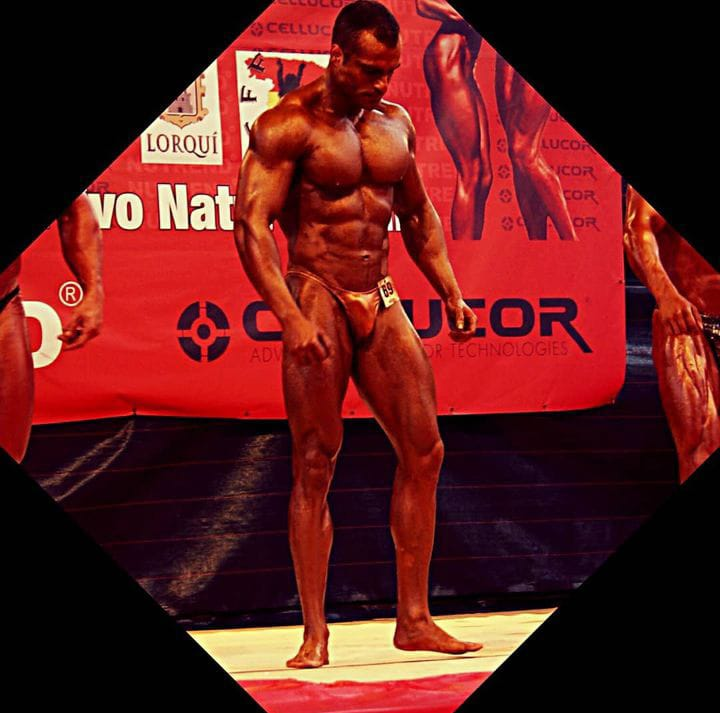

Entrenador personal y nutricionista

Soy un experto en asesoramiento nutricional y planes de entrenamiento personalizado.
Mi formación en nutrición y dietética me ha dado una profunda comprensión de cómo la alimentación y el ejercicio afectan a la salud y el bienestar.
He ayudado a muchas personas a alcanzar sus metas de salud y fitness a través de planes de alimentación y entrenamiento bien diseñados.
Mi experiencia en competiciones de levantamiento de pesas me permite entender las necesidades específicas de los atletas y proporcionar un asesoramiento deportivo de alto nivel.
Soy un competidor nacional destacado, y he sido campeón de España con marca récord en powerlifting,
campeón de la Comunidad Valenciana y Murcia en Classic Physic, y competidor nacional en Culturismo.
Si estás buscando mejorar tu salud y condición física, estoy aquí para ayudarte a alcanzar tus metas a través de un enfoque personalizado y sostenible.